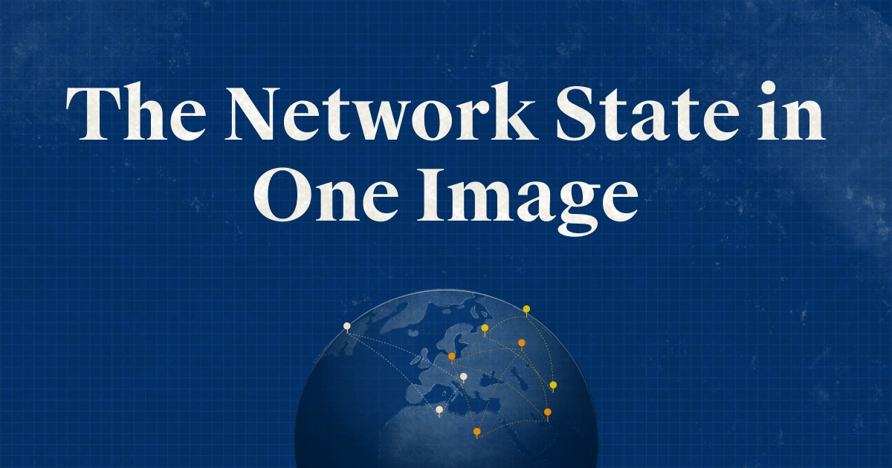

Nos sociétés actuelles, où que nous soyons dans le monde, bien qu’avec certaines disparités parfois importantes, sont de plus en plus confrontées à une révolution provenant d’un nouveau rapport à l’individu et de son rôle en société. La digitalisation croissante de nos manières de communiquer, de consommer ou de travailler, tend à changer fondamentalement notre valorisation personnelle. La thèse de “l’Etat-réseau” présentée par Balaji Srinivasan dans son livre “The Network State”, prône un nouveau modèle de société qui s’appuie sur une forte décentralisation, une conscience et une action collective renforcée par des moyens technologiques et des innovations sociales et politiques majeures.
Ce modèle se fonde sur un réseau social, au sens stricte du terme, proposant une ou plusieurs innovation(s) morale(s), une conscience collective d’appartenance, une capacité d’action collective, la responsabilité civile de chacun de ces membres ou néo-citoyens, un nouveau modèle de gouvernance basé sur un contrat social “intelligent”, une technologie cryptographique permettant l’utilisation d’une monnaie reconnue ainsi que d’une valorisation patrimoniale de chaque individu, jusqu’au point d’orgue permettant une potentielle reconnaissance diplomatique, en tant qu’”Etat-réseau”.
Afin de mieux comprendre sur quoi ce nouveau modèle de société repose, il convient de donner une analogie utilisée à plusieurs reprises par l’auteur, celle des start-ups : créer quelque chose de nouveau et révolutionnaire, sans aucune contrainte passée ou historique. Cependant, cela ne veut pas dire qu’il faille ne pas s’y intéresser du tout. Nous allons voir pourquoi l’histoire constitue toujours une boussole, d’autant plus pour ce qui relève de questions sociales, gouvernementales ou politiques, car elle fût toujours là pour nous rappeler le poids des interactions humaines et des expériences sociales et collectives, au fil des époques.
L’histoire comme boussole
Pour reprendre l’analogie précédente, Srinivasan nous explique qu’une start-up va d’abord privilégier l’innovation technologique sur la culture d’entreprise. Un “Etat start-up”, soit l’embryon d’un “Etat-réseau”, doit privilégier la culture en communauté vis-à-vis de l’innovation technologique. C’est là-dessus que repose toute la recette d’un “Etat-réseau” tel que l’imagine l’auteur : innover culturellement nécessite de sonder le passé. C’est ainsi que l’histoire détient une place primordiale dans la fondation de ce modèle.
L’auteur résume l’histoire de la manière suivante : une amplitude et un volume d’acteurs et d’interactions énormes, une échelle de temps très longue et des mesures complexes car corrompues par l’action humaine, toujours impredictible. Il résume ainsi l’histoire comme une “épopée cryptique de trajectoires tortueuses”. Pour mieux savoir naviguer dans cet environnement, qui représente par ailleurs une sorte de science réaliste de l’humanité, il est intéressant de distinguer deux matières : la micro-histoire et la macro-histoire.
La micro-histoire permet d’analyser les systèmes reproductibles, c’est-à-dire les situations historiques n’impliquant qu’un nombre limité de variables et qui permettent de mesurer des tendances, par exemple. Inversement, la macro-histoire analyse les systèmes non-reproductibles, on vient ici analyser l’histoire de l’humanité dans son ensemble, c’est-à-dire une théorie si impredictible qu’il n’est pas possible de la reproduire ou de la mesurer précisément. Micro-histoire et macro-histoire sont liées selon l’auteur, car en débutant par la première pour obtenir une méthodologie et une précision importante dans les données extraites, nous pourrions dès à présent rendre beaucoup plus précise la macro-histoire, soit le journal de toute notre histoire passée et future. Ceci pourrait être rendu possible par l’utilisation des technologies liées à la blockchain, la cryptographie rendant très difficile le fait de falsifier ou de faire disparaître une information, et très simple le fait de la stocker à grande échelle de manière sécurisée. De la “big data”, nous passerions à la “big history”, la blockchain représentant selon l’auteur l’outil de traitement d’information le plus rigoureux que nous ayons connu à ce jour.
La réalisation de cette agrégation entre les capacités provenant de la micro-histoire et l’échelle d’amplitude provenant de la macro-histoire pourrait créer ce que l’auteur appelle la “cryptohistoire”. Cela représenterait le journal de tous les évènements individuels ou collectifs ayant lieu au sein de l’humanité, doté d’une exhaustivité inédite. Cette nouvelle “cryptohistoire” rendrait complètement indépendante et transparente la gouvernance d’un Etat ainsi que l’étude de notre histoire, à l’avenir. Cependant, il est pertinent de savoir qu’il existe également de nombreuses théories de l’histoire, qui reposent sur des modèles visant à expliquer sa direction : le déterminisme technologique, qui estime que la technologie mène culturellement l’évolution de la société, le modèle des trajectoires, qui explique que l’infinité de trajectoires à prendre en compte représente notre histoire, le modèle statistique, qui estime que l’histoire facilite les prédictions, permettant elle-même de mieux l’expliquer, et de nombreux autres modèles encore... Toujours est-il que ces théories représentent des outils, permettant de mieux naviguer au sein de l’histoire, qui n’est rien d’autre qu’une énorme base de données de tout ce que nous sommes et avons été. Ici, nous venons de parler de l’aspect technique qui se cache derrière notre conception de l’histoire.
Cependant, l’auteur cite George Orwell pour résumer simplement comment fût majoritairement bâtie l’histoire telle que nous la connaissons : “Celui qui a le contrôle du passé a le contrôle du futur. Celui qui a le contrôle du présent a le contrôle du passé”. L’histoire politique est l’autre levier important permettant de “faire” l’histoire. Le modèle du déterminisme politique consiste à partir du postulat selon lequel les “gagnants” sont ceux qui font l’histoire. Sur l’histoire passée à ce jour, nous pouvons estimer qu’une bonne partie fût écrite par les gagnants. L’auteur résume finalement bien cette dualité : l’histoire technologique consiste en l’histoire de ce qui fonctionne quand l’histoire politique consiste en l’histoire de ce qui fonctionne pour obtenir ou maintenir le pouvoir.
Enfin, il nous explique qu’en faisant intervenir la vision technique de l’histoire, basée sur des théories et modèles, puis la vision politique, qui produit le récit historique tel que nous le lisons quotidiennement, et enfin une innovation technologique qui repose sur la cryptographie (soit la forme d’histoire la plus fiable à ce jour), alors nous pourrons concevoir une base méthodologique solide sur laquelle construire le modèle d’un “Etat-réseau”.
La technologie comme moteur
L’auteur fait ensuite intervenir au centre de son modèle l’autre variable importante reposant sur la technologie et ses possibilités. Celle-ci serait l’autre levier (après la culture et l’histoire) permettant d’arriver à un modèle d’”Etat-réseau” fonctionnel.
Si la donnée n’était pas une limite à l’heure actuelle, notamment concernant le volume de traitement, alors en prenant en compte quotidiennement l’ensemble de celle-ci, nous pourrions arriver selon l’auteur à une lecture de l’histoire presque Asimovienne (la psychohistoire, science censée prédire l’avenir de manière fiable, a été introduite par Asimov dans ses romans). La technologie est aussi en train de changer nos sociétés de manière radicale et pas seulement sur les aspects liés à nos modes de vie : le rapport à l’autre, à l’Etat, au travail, à soi-même également… Nous constatons depuis plusieurs décennies déjà une chute du nombre de croyants et du poids de la religion dans notre société. Nous commençons également à constater cela au niveau du poids de l’Etat au sein de celle-ci. Aujourd’hui, l’auteur nous indique que le “réseau” est devenu le nouveau “Leviathan”, au même-titre que l’ont été ou le sont encore, la religion et l’Etat. Celui-ci ne les a pas encore totalement effacés, cependant une tendance marquée pousse vers un impact toujours plus important des réseaux et de la technologie au sein de nos sociétés, à l’avenir.
En quelque sorte, nous avons aujourd’hui une nouvelle gouvernance mondiale qui se forme sur la technologie et les réseaux digitaux, cependant celle-ci est marquée par une forte présence d’acteurs privés parfois menés par des gouvernements qui en comprennent les enjeux. L’essentiel se joue ainsi là, car les prochains conflits majeurs vont certainement se jouer en réseaux dématérialisés, afin de contrôler les individus par l’intermédiaire de l’information, de sa distribution jusqu’à sa gestion, à une échelle toujours plus globale.
Srinivasan reprend une nouvelle fois une notion technologique pour présenter un aspect central de la fondation de son “Etat-réseau”, avec son “unique commandement”, comme un leitmotiv central sur laquelle une “société start-up” se construit. Ceci de la même manière qu’une start-up se fonde sur la résolution d’un problème unique, auquel elle apporte souvent une solution technologique ou fonctionnelle. Selon l’auteur, ce commandement doit être une innovation morale, qui se doit d’avoir beaucoup de sens et de traiter un sujet de société qui rassemble suffisamment d’individus. Ceci dans le but de recruter des membres ou “néo-citoyens” qui soient producteurs et non consommateurs, car le but ici n’étant pas de générer un chiffre d’affaires comme une entreprise pourrait le faire, mais bien de créer un nouveau modèle de société en ajoutant du sens et en impliquant l’individu. Aussi, le fait de se focaliser sur un unique commandement permet de ne pas tomber dans l’impasse des partis politiques, qui proposent une ribambelle d’innovations morales complexes voire parfois irréalisables… Ce modèle permet de profiter à la fois de la ferveur morale dont jouissent les partis politiques traditionnels, tout en se fondant sur une structure dynamique proche de celle des startups techs, en se focalisant sur une unique innovation morale permettant d’impliquer fortement les parties prenantes.
Désormais, venons-en aux faits : beaucoup d’aspects sociétaux et moraux actuels peuvent être confrontés à leurs équivalents digitaux ou technologiques qui seraient proposés dans un modèle d’”Etat-réseau”. D’ailleurs, ces derniers viendraient suppléer la plupart des piliers de nos sociétés actuelles. Face à l’autorité de l’Etat, il y a la technologie de chiffrement, permettant de sécuriser de nombreux aspects de la vie en société sans intervenir personnellement sur l’individu, de manière décentralisée. Face à la monnaie fiduciaire, il y a les crypto-monnaies, qui proposent un système économique décentralisé sur lequel personne n’exerce de contrôle et ainsi sécurisé par le chiffrement en blockchain. Face aux médias traditionnels (souvent sous l’emprise de magnats privés ou gouvernements), il y a l’information de paire-à-paire, permettant de diffuser de manière libre et surtout indépendante, via des plateformes décentralisées. Face à la loi sous sa forme stricte et traditionnelle, il y a les “smart-contracts”, qui évitent toutes les contraintes de frontières, coutumes et autres moeurs locales, en permettant l’édification de textes certifiés, diffusés et sécurisés par l’intermédiaire de la blockchain. Face à la fraude ou l’usurpation, il y a les vérifications cryptographiques, par l’intermédiaire de la blockchain qui reste selon l’auteur, l’outil de vérification et réplication le plus robuste et infalsifiable qui n’ait jamais existé.
L’agglomération de ces nouvelles possibilités majoritairement permises par la technologie sont à l’origine de ce qu’il est possible de fonder dans un “Etat-réseau”. Cependant, nous allons voir que cela implique des changements sociaux majeurs, que nous ne sommes pas forcément prêts à engager…
Un changement de paradigme social
L’ensemble des changements qu’impliquent ce modèle nécessite également un changement de paradigme social, celui même qui nous permet de vivre convenablement en société. L’auteur analyse les individus et particulièrement les politiciens actuels comme voulant premièrement s’accaparer une “part” de la société elle-même, afin de changer quelque chose qu’ils se sont pleinement approprié. C’est ainsi que se joue le jeu politique aujourd’hui et c’est précisément ce qui ne fonctionne pas selon l’auteur : les individus de “l’Etat-réseau” souhaiteraient quant à eux créer un domaine qui leur appartient, à partir de rien, sans s’approprier quelconque autorité ou participation. C’est une version “opt-in/opt-out” de la politique, beaucoup plus neutre et transparente.
Si l’on prend l’histoire politique elle-même, celle-ci est représentée de manière traditionnelle par l’intermédiaire des jeux d’oppositions que l’on connaît : droite vs gauche. Que ce soit de l’un ou de l’autre côté, chacun va justifier le retournement de l’opposition par un nouveau modèle de société. Ceci se répète depuis des décennies, avec une classe politique “révolutionnaire” qui devient petit à petit le modèle de caste dirigeante bien ancrée sur ses idées, permettant à l’opposition d’obtenir de nouveaux arguments pour retourner celle-ci et devenir la nouvelle caste dirigeante, et s’en suit une boucle perpétuelle…
L’analyse de l’auteur se joue également à l’échelle globale, car on peut facilement constater que l’humanité se divise souvent en deux pour obtenir la possession de ressources ou l’autorité sur l’autre, par exemple. Nous retrouvons une situation qui se perpétue, comme nous le rappelle l’auteur avec les exemples de la Révolution française, qui conduit ensuite à une division intense de la société, de la Seconde Guerre mondiale, qui conduit à la division en deux camps des autrefois alliés américains et soviétiques, conduisant elle-même à la Guerre Froide… La division en deux camps, souvent représentés par la gauche et la droite, consiste en une réelle science sociale, digne des plus importantes lois de la physique, qui se jouent partout et tout le temps.
L’histoire politique se joue également à l’échelle étatique, car les Etats évoluent dans un monde qui était autrefois unipolaire, devenu ensuite bipolaire et qui tend à devenir tripolaire. Suivant la Guerre Froide, les USA sont devenus début 1990, le principal pouvoir dominant à l’échelle mondiale et ce pendant quasiment une génération, jusqu’aux années 2010 et le “soulèvement” asiatique, notamment des mastodontes Chinois ou Indiens (plus récemment), mais aussi de l’avènement des nouvelles technologies. L’auteur nous montre un autre ordre mondial qui se veut en réalité tripolaire, entre la droite, la gauche et le centre : au début du XXè siècle, le pouvoir moral fût soviétique, le pouvoir militaire fût celui de l’allemagne nazie, et enfin le pouvoir monétaire fût et resta longtemps américain (suivant les accords de Bretton-Woods notamment). Srinivasan explique que certains de ces pouvoirs ont perduré, mais que les protagonistes ont changés : aujourd’hui l’establishment (médias, big techs…) détient le pouvoir moral, le communisme chinois représente le modèle ultime de pouvoir militaire, et les crypto-monnaies, un nouveau modèle de pouvoir monétaire. Ce que l’auteur nous explique, c’est que l’ordre monétaire que représente les crypto-monnaies pourrait prendre le dessus sur l’ordre moral aujourd’hui détenu par l’establishment, qui pourrait ensuite engager un courant de nouvelles possibilités offert par la décentralisation. C’est ainsi que le modèle “d’Etat-réseau” pourrait prendre une ampleur importante en s’appuyant là-dessus.
Enfin, qui dit changement dit menaces potentielles… Parmi celles-ci, l’auteur cite plusieurs facteurs qui sont d’actualités, modifiant activement notre vision de la réalité. Les trois principaux qu’il présente sont la distorsion, l’alignement narratif et l’usage du pouvoir contre la vérité. La distorsion consiste à choisir de présenter certaines informations sous un angle bien précis, dans le but de favoriser un point de vue ou de diriger une réflexion. L’alignement narratif consiste quant à lui à modifier un discours afin de prendre position en faveur d’un objectif prédéfini. Enfin, l’usage du pouvoir contre la vérité est plus subtil mais pas moins important, car il fait usage de notion de pouvoir dans le but de modifier l’engagement de l’individu, qu’il soit légitime ou non. Ces outils sont utilisés à grande échelle par les principaux gouvernements, multinationales, médias et autres lobbies mondiaux, car l’objectif reste le même peu importe l’aspect autoritaire ou plus ou moins démocratique de ses instigateurs, même si la forme diverge. C’est ce contre quoi le modèle “d’Etat-réseau” imaginé par l’auteur souhaite se battre, en opposant une solution libre et façonnée par ses participants à une société manipulée par ses élites.
Le “network-state”
“L’Etat-réseau” est un modèle dynamique, qui évolue en fonction des besoins et intentions de ses participants, mais qui se focalise sur des principes forts. Tel qu’il a été présenté en introduction selon les termes de l’auteur, il s’agit d’un modèle de société qui s’appuie sur une ou plusieurs innovation(s) morale(s), une conscience collective d’appartenance, une capacité d’action collective, la responsabilité civile de chacun de ces membres ou néo-citoyens, un contrat social “intelligent”, une technologie cryptographique permettant l’utilisation d’une monnaie reconnue ou l’enregistrement de données indispensables à son fonctionnement.
L’un des principes importants est d’abord celui de l’intention de participation, afin d’intégrer le réseau. Cela peut passer par une preuve d’alignement comme des expériences, productions personnelles ou professionnelles, autres participations associatives/communautaires ou réalisations diverses. Ensuite, le principe d’innovation morale est celui qui va regrouper les individus souhaitant intégrer le réseau autour d’une cause commune : les communautés missionnaires gagnent souvent sur les communautés mercenaires, du fait de leur cohésion importante. Cela se combine bien avec le point précédent, car les individus choisissant d’intégrer le réseau le font volontairement et s’en donnent les moyens en prouvant leur alignement moral et social. Autre point majeur, l’utilisation de la technologie cryptographique afin de gérer des actifs intangibles, la propriété et la production intellectuelle, les smart-contracts, les certificats officiels et autre actes de propriété, soit tout ce que gère un Etat traditionnel, et ce de la manière la plus sécurisée qu’il soit par l’intermédiaire de la blockchain.
Ce qui est intéressant à noter, c’est que l’ensemble de ces principes permettent de rendre la citoyenneté au sein de cet “Etat-réseau” aussi dynamique que les frontières sont statiques pour un Etat traditionnel. La néo-citoyenneté fait que les citoyens peuvent appartenir à plusieurs réseaux tout en n’étant pas dépendant de frontières nationales. Ils sont ainsi identifiés dans chacun de leur “Etat-réseau” comme un citoyen à part entière. Enfin, la gouvernance au sein de ces réseaux se fait par une administration qui ressemble très fortement à la direction d’une entreprise, avec une sorte de dirigeant ou PDG et de managers/ingénieurs qui travaillent sur l’édition de lois, le maintien de l’information sous sa forme décentralisée et la prise de décisions importantes, d’abord déterminés par les néo-citoyens. Les gouvernants sont également choisis par ces mêmes membres citoyens.
Pour conclure, l’auteur explique que “l’Etat-réseau” est à la fois les individus (le réseau social), les terres (les données encryptées sur ce que représentent chaque individus patrimonialement parlant), les lois (le réseau de gouvernance et les smart contracts), et le “Leviathan” (la technologie cryptographique infalsifiable). Soit tout ce que représente un état traditonnel, mais l’essentiel change sur le fond et sur la forme. D’unions en réseau, nous passerons à des archipels en réseaux, puis enfin à la forme ultime de “l’Etat-réseau”, qui sera à ce stade doté d’une réelle reconnaissance diplomatique provenant d’autres états “traditionnels”.
L’auteur omet cependant de nous présenter concrètement les moyens de maintenir en l’état les différentes fonctions et valeurs de “l’Etat-réseau”. L’autorité des gouvernements traditionnels est très complexe à remettre en question, même si elle est loin d’être parfaite. Une force de maintien de l’ordre est à priori indispensable dans toutes communautés, et cela n’est pas représenté dans un réseau digitalisé comme celui-ci. Certains principes de gouvernances et d’autres principes juridiques seront potentiellement aussi mis à mal dans ce modèle. Il faudrait expérimenter pour le constater, certainement, et c’est là-dessus que repose tout l’intérêt de la réalisation de cet ouvrage…